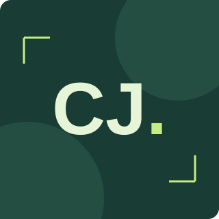

CHANGJIN LEE · LEARNING IN PUBLIC
배우고, 만들고,
함께 나눕니다.
안녕하세요, 이창진입니다.
웹의 기초부터 하나씩 만들고,
배운 것을 동료와 나누며 성장합니다.
직접 만들며 쌓아가는 첫 포트폴리오아래로 둘러보기 ↓

HELLO, I'M CHANGJIN01 — ABOUT
설명할 수 있을 때까지,
직접 해봅니다.
지금은 HTML, CSS, JavaScript로 웹의 기본 동작을 익히고 있습니다. 화면을 만드는 것에서 한 걸음 더 나아가, 클릭 한 번이 어떤 변화를 만드는지 이해하려고 합니다.
동료학습에서는 막힌 지점을 함께 살펴보고, 제가 이해한 내용을 제 말로 설명합니다. 이 공간에 그 과정에서 만든 프로젝트를 모읍니다.
GitHub에서 학습 기록 보기 ↗02 — SKILLS
지금 배우고 있는 것들
구조부터 상호작용까지, 한 단계씩.
HTML
의미 있는 구조
시맨틱 태그 · 접근성 · 폼CSS
어디서나 편안한 화면
Flexbox · Grid · 반응형JavaScript
사용자 행동에 반응하기
DOM · 이벤트 · 비동기 요청
03 — PROJECTS
만들면서 배우는 기록
GitHub의 최근 업데이트된 공개 저장소를 가져옵니다.
04 — CONTACT
함께 배우는 대화,
언제든 환영합니다.
궁금한 점이나 함께 나누고 싶은 이야기를 적어보세요.
이 폼은 입력 검증을 연습하는 데모입니다.
입력 내용은 저장되거나 실제로 전송되지 않습니다.